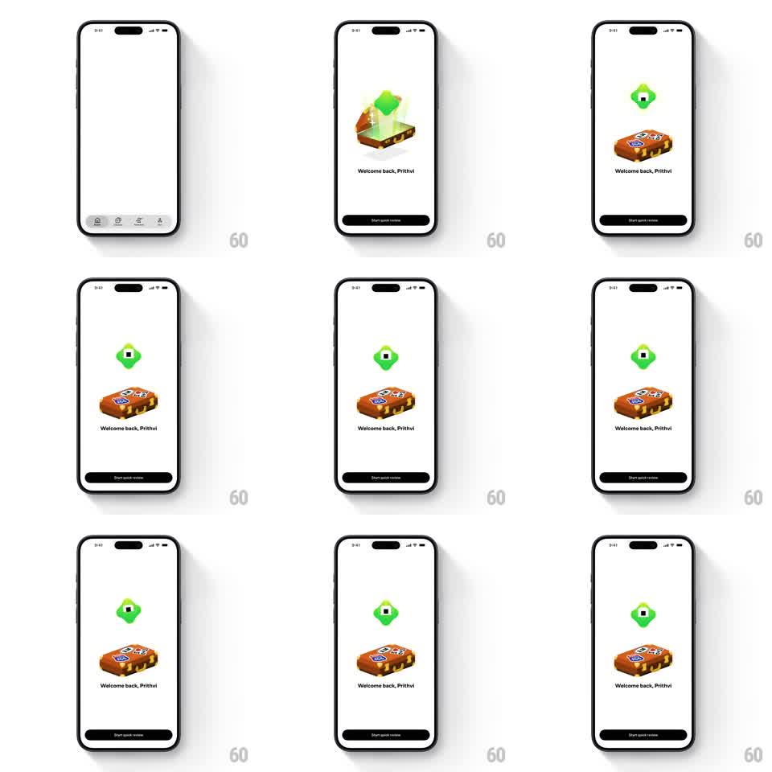

Media
Frame-by-frame

Rebuild this animation 1:1: Brilliant's welcome-back greeting - a stickered suitcase pops open with a glow and the Koji mascot springs out from behind it, hovering above the case as "Welcome back, <name>" and the "Start quick review" button settle in.

Rebuild this animation 1:1: Brilliant's welcome-back greeting - a stickered suitcase pops open with a glow and the Koji mascot springs out from behind it, hovering above the case as "Welcome back, <name>" and the "Start quick review" button settle in.
## Integration
Integration: stack-agnostic spec - springs given as stiffness/damping, timed motions as duration + curve; map every value to your framework and animation library of choice.
## Scene
White screen over the standard tab bar. Center: a 3D suitcase covered in travel stickers. Above it, once revealed: the green blob mascot Koji with its square face. Below: "Welcome back, Prithvi" and a black "Start quick review" button.
## Motion spec
Pattern: prop reveal + mascot spring entrance, ~1.5s.
- Suitcase: scales in (0.7 -> 1, spring ~320/16) and its lid pops with a light glow flash (200ms).
- Mascot: Koji launches from behind/inside the case (translateY -80px with spring ~280/12 for a bouncy overshoot), squashing on exit and stretching at the arc's peak.
- Hover: Koji settles into an idle float above the suitcase (8px, 2s loop) with a slow tilt (+-5deg).
- Copy: "Welcome back, Prithvi" fades/slides up (250ms), then the button fades in (200ms).
- Exit: on continue, both elements scale down slightly and the dashboard slides up (350ms, ease-out).
## Calibration
- The overshoot is the charm - use a loose spring for Koji, tighter for the suitcase.
- Koji emerges from behind the case's lid, not from the screen edge.
## Reduced motion
Suitcase, Koji, and copy fade in together (250ms); no launch or hover.
## Don't miss
- The suitcase keeps its sticker detail; it is a traveled case, not a plain box.
- The greeting is personalized ("Welcome back, <first name>") - wire it to the user's name.